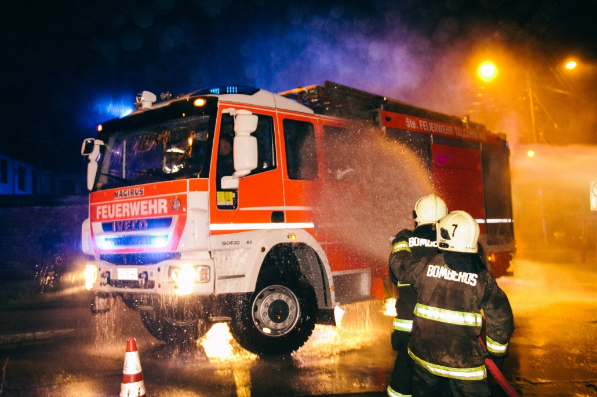
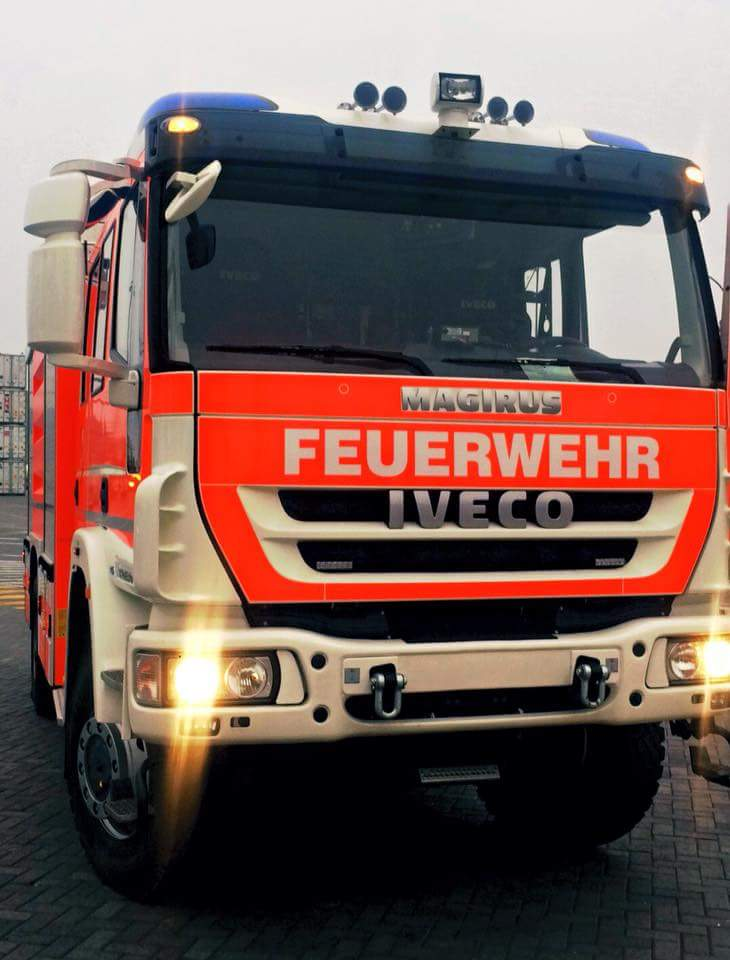

Incendio
Unidad destinada principalmente al control de incendios, en servicio desde mayo de 2018.
- Marca
- Iveco Magirus
- Modelo
- FF160E30
- Año
- 2017
- Tracción
- 4×4
- Carrocería
- TLF 30/40
- Motor
- 300 HP
- Transmisión
- ZF 6 velocidades
- Bomba
- Magirus MPH 230
- Estanque
- 3.000 litros
- Espuma
- 200 litros
- Cabina
- 1+9




Características de la unidad
- Caja de transmisión robotizada, con modo automático, manual y lento.
- Marcha rápida y lenta, bloqueo de la caja de transferencia y bloqueo de diferencial.
- Frenos ABS y freno de motor.
- Bomba de alta y baja presión, con función de bombeo en marcha (pump & roll).
- Estanques de fibra de vidrio reforzado.
- Sistema de espumógeno con dosificación de 3, 6 y 8 %, y opción de alimentarlo desde un bidón externo.
- Cuatro salidas de 70 mm, dos entradas de 70 mm al estanque y aspiración de 125 mm.
- Pitón monitor y manguerín de alta presión.
- Mástil de iluminación telescópico neumático con 6 focos LED de 24 V.
Otras unidades en servicio
 RX-5Rescate pesadoUnidad destinada a intervenciones de rescate técnico pesado y también al control de incendios.
RX-5Rescate pesadoUnidad destinada a intervenciones de rescate técnico pesado y también al control de incendios.- Marca
- MAN-Magirus
- Modelo
- TGM 18.320
- Año
- 2024
 MX-5Plataforma aéreaPlataforma aérea diseñada para operaciones de rescate de difícil acceso y para el control de incendios en edificios.
MX-5Plataforma aéreaPlataforma aérea diseñada para operaciones de rescate de difícil acceso y para el control de incendios en edificios.- Marca
- Scania
- Modelo
- P410
- Año
- 2025